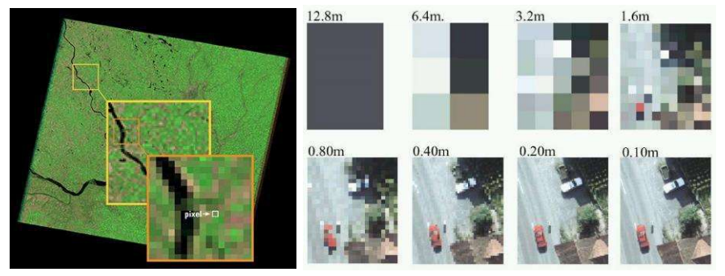
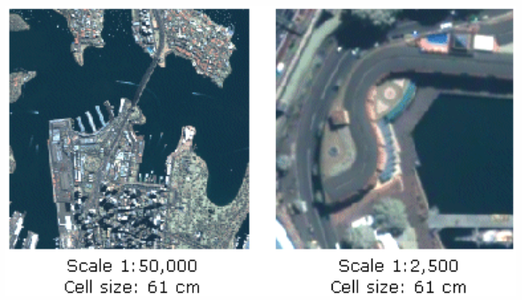

La resolución espacial hace referencia al tamaño del píxel y determina el tamaño mínimo de los objetos posibles de identificar en un ráster. Si la resolución espacial es mayor, el tamaño del píxel es menor y por tanto es posible identificar elementos del espacio con mayor claridad, es decir, el tamaño mínimo identificable aumenta.

Ilustración: Comparación tamaño de píxel de una imagen (Bravo, 2017).
Cuanto mayor es la resolución de un ráster, más pequeño será el tamaño de celda y mayor será el detalle. Esto es lo opuesto de lo que ocurre con la escala, ya que cuanto más pequeña sea esta, menor será el detalle.

Ilustración: Efecto de aumentar la escala con una resolución espacial constante (ESRI, 2020).
Ahora el tamaño del pixél va a definirse de acuerdo a lo que estemos estudiando y el detalle de la otra información que tengamos. Es por eso que no debemos pensar que siempre que más detalle es mejor, todo dependerá de la escala. Incluso hay fenómenos ecológicos que solo tienen sentido a escalas grandes, por lo que contar con información muy detallada solo puede generar ruido en la interpretación.